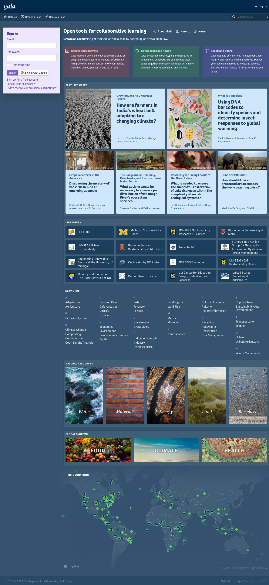
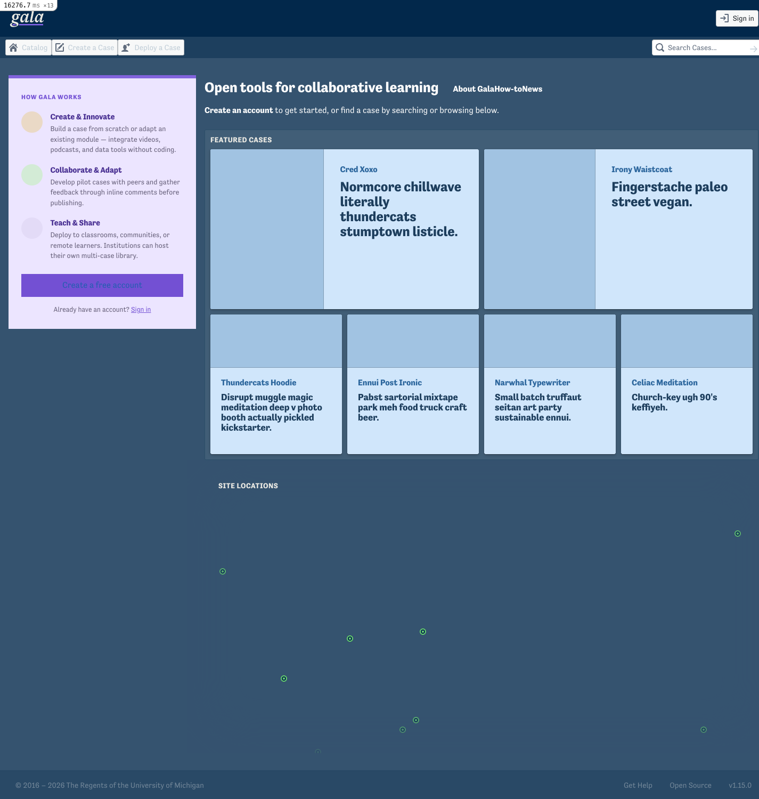
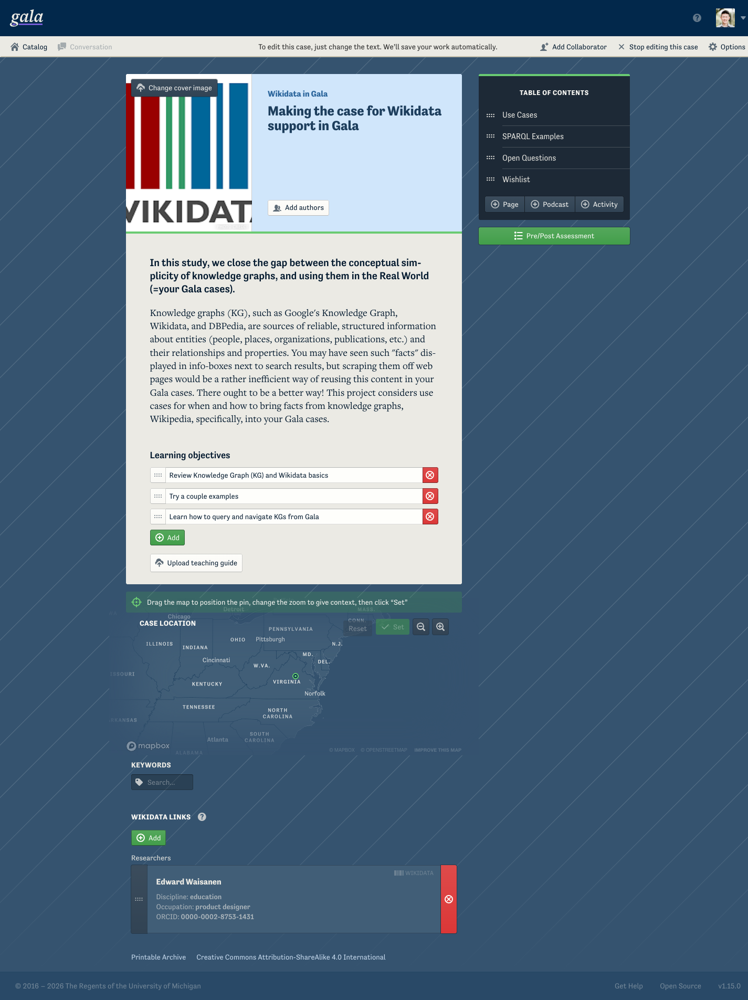
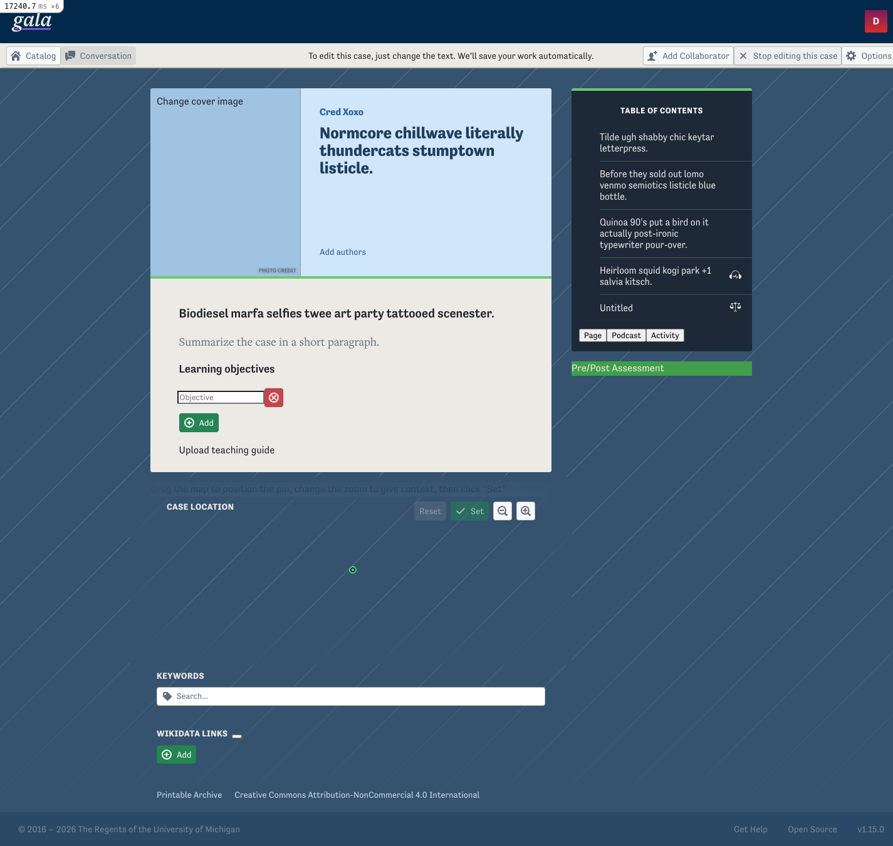
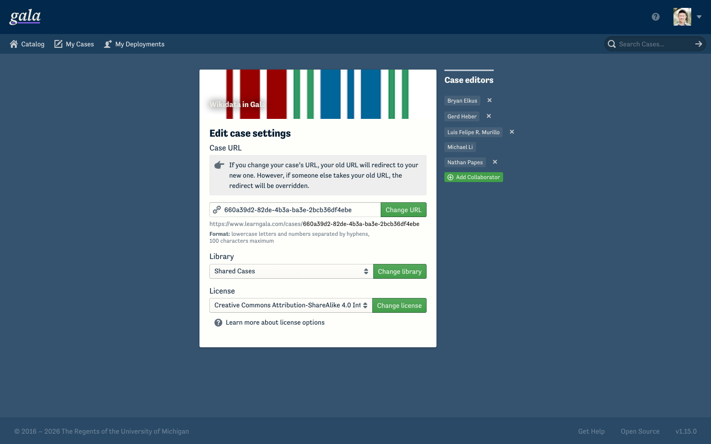
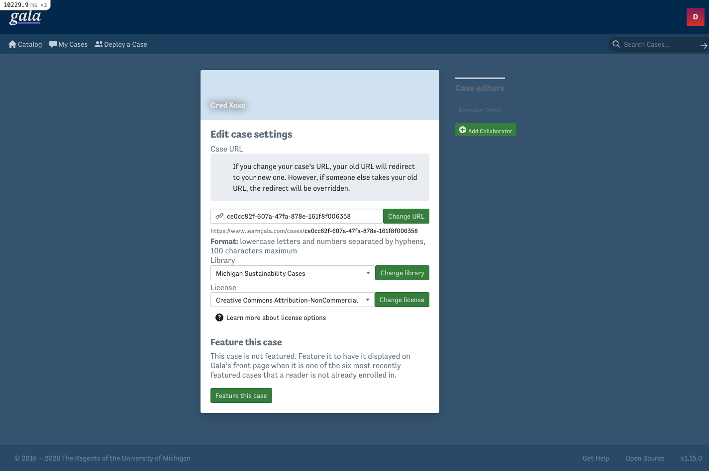

The styling breakage is the Blueprint upgrade, not the Heroku→AWS move (local reproduces it). Current: branch redesign/catalog-home, Blueprint core 6.15.0 (React 19). Reference for "correct" = Gala's brand definition + Heroku prod (Blueprint 2).
On Blueprint 6 there are two independent root causes: (A) a namespace mismatch leaves hand-authored legacy elements unstyled, and (B) Gala's brand palette is never applied to Blueprint 6.
| Issue | Where | Severity | Fix |
|---|---|---|---|
Legacy elements unstyled — pt-/bp4- classes match nothing in BP6 CSS (bp6-) | className-string buttons/inputs, Rails markup that relies on Blueprint structure | HIGH | A |
| Brand colors lost — links/primary blue (not purple), success stock green, dark surfaces gray (not navy), cream→white | React bp6- components app-wide | HIGH | B |
| Links blue, not purple (a brand-color instance) | every link, e.g. sign-in card | HIGH | B |
Icon-font glyphs blank — BP6 removed class-based icons; pt-icon-*/bp4-icon-* match no CSS | 172 uses / 72 files (e.g. "How Gala Works" card) | HIGH | F |
Stop-editing button lost minimal | case editor toolbar | MED | C |
| Dim "Case editors" sidebar heading | settings page (dark sidebar) | LOW | B |
Blueprint-6 cosmetic defaults (radius 4px, modern color(srgb …)) | app-wide, subtle | LOW | — |
BLUEPRINT_NAMESPACE build define so React emits that same namespace. Fixes structure (A) and brand colors (B) in one coordinated change. Caveat: Blueprint reworked its Sass color system across v3–v6 (@blueprintjs/colors) — use the checklist to verify each color re-themes; fall back to post-hoc bp6-* CSS overrides for any that don't.pt-/bp4- → bp6- (~1497 usages) and retire the shim, or repoint the shim to bp6-.overview/StatusBar.jsx:132 → include the minimal class explicitly so it isn't dropped by the props.className || 'pt-minimal' fallback in Toolbar.jsx:152.bp6- classes to any deletions/stats markup that relies on Blueprint structure (the settings form is fine — Gala styles it itself).Root cause A — namespace mismatch. Blueprint's CSS namespace is version-stamped (pt-→bp3-→bp4-→bp5-→bp6-). BP6 CSS has 999 bp6- classes, 0 pt-/bp4-. But the runtime shim still maps pt-→bp4-, and source still emits pt- (1095) / bp4- (402) / bp6- (0). React components emit bp6- → styled; hand-authored legacy classes match nothing → unstyled. Live-verified: a pt-button bp4-… button = transparent, 0px padding; a bp6-button = styled (4px 8px padding).
Root cause B — brand palette not applied. application.css loads Blueprint's precompiled CSS; blueprint.scss still defines Gala's palette vars but no longer imports Blueprint's Sass, so they're dead → Blueprint 6 renders in its stock palette. (RC-A's impact is selective: legacy elements that relied on Blueprint structure break; ones Gala also styles itself — e.g. admin forms — survive.)
Gala re-themed Blueprint 2 by redefining these palette vars before importing Blueprint's Sass — this block is the entire brand definition. Every color regression maps to one row. Computed values verified against the live BP2 site. On BP6 none apply.
| Sass var | Gala value | Blueprint role | Symptom on BP6 |
|---|---|---|---|
| $blue2 | 100,68,187 | $pt-link-color — all links | links stock blue |
| $blue3 | 115,80,211 | $pt-intent-primary + focus ring | primary/focus stock blue |
| $blue1/$blue5 | primary active / hover / dark-primary | stock blue variants | |
| $green3 | 66,158,74 | $pt-intent-success | stock green (35,133,81) |
| $green1/$green5 | success active / light | stock green variants | |
| $dark-gray1 | 1,24,45 | dark bg + $pt-text-color | dark text/surfaces neutral; dim toolbar labels |
| $dark-gray3 | 26,47,66 | dark dialog / card surfaces | dialogs navy → gray |
| $dark-gray5 | 49,67,84 | dark elevated / buttons | dark buttons neutral gray |
| $gray1 | 94,108,120 | $pt-text-color-muted | helper-text tint (subtle) |
| $white | 254,254,251 | cream — button text / light surfaces | pure white (subtle) |
| $light-gray5 | 250,249,245 | $pt-app-background-color | pure white page bg (subtle) |
| $orange* / $red* | — (not overridden) | warning / danger intents | ✓ stock on BOTH — never branded, no regression |
Danger/warning were never overridden, so they look identical on both versions — confirming the brand regression set is exactly the purple/green/navy/cream-derived colors and nothing else.
Any pt-/bp4--only element that relied on Blueprint's structural CSS renders without it on BP6 (transparent, no padding). Confirmed live on the catalog home. React components (bp6-) are unaffected.
React Blueprint components render but in stock colors: blue links/primary (not purple), stock green (not Gala green), neutral-gray dark surfaces (not navy), pure-white light surfaces (not cream). See the checklist above for the exhaustive list. Links verified live: rgb(100,68,187) purple on prod vs rgb(33,93,176) blue on BP6.
minimal MED — confirmed on BP6StatusBar.jsx:132 passes a custom className that trips the props.className || 'pt-minimal' fallback in Toolbar.jsx:152, dropping the modifier. Live on BP6: bp6-button Toolbar__item--stop-editing with no bp6-minimal → solid light-gray fill + gray text instead of flat.
The settings form renders correctly on BP6 (white card, selects, green buttons, callout) because Gala's own admin SCSS styles it — despite ~46 legacy-only elements. The only regression is the dark "Case editors" sidebar heading (bright on prod → washed-out gray on BP6). Deletions/stats pages still warrant a check if they rely on Blueprint structure.
Blueprint 6 ships icons as React <Icon> SVG components only — its icons CSS has just the @font-face declarations and zero icon classes (no .bp6-icon-*, nor .pt-icon-*/.bp4-icon-*). Any icon rendered via a className glyph renders blank. Distinct from Root cause A — renaming to bp6- does not help (those classes don't exist); the fix is the React <Icon> component.
pt-icon-*/bp4-icon-* glyph classes — all blank on BP6.SignInCard.jsx:47 sets pt-icon-standard pt-icon-${icon} bp4-icon-…). The colored circles render (Gala's own CSS); the glyphs are gone.<Icon icon="…"> (SVG); codemod-able for common cases.Defaults differ again from v4 (e.g. default radius 4px, modern color(srgb …) values). Accept or override.
bp6- and gets structural styling (just stock colors, per B).<Icon> SVGs render (this was a false alarm in an early pass).Compare chrome & color, not text/images — local seed differs from prod (cases, cover images, keywords) and its map is a partial Mapbox load.






bp6- contrast, links purple→blue, stop-editing (C), settings render-fine + dim sidebar (D).?edit=true, on this branch.getComputedStyle fingerprint keyed by normalized class signature, captured on reference + local, diffed programmatically (normalizing known palette shifts so only new/structural diffs surface), then verified with screenshots. Lesson: compare all properties, verify pixels (counts over-flag), and scan all elements — plain <a> links are themed via $pt-link-color, not a class.